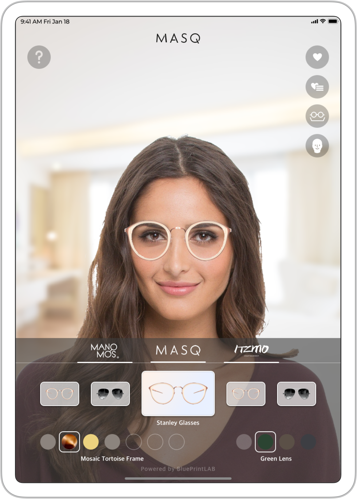
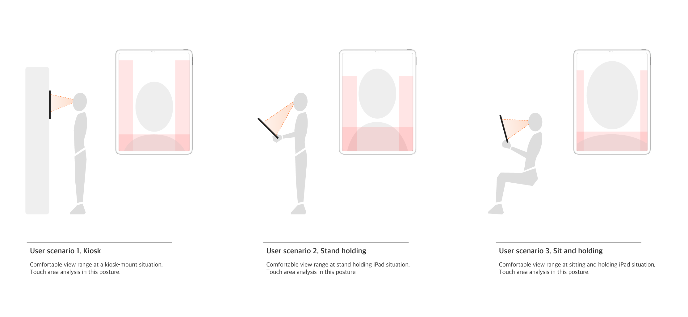

MASQ project
AR Virtual try-on solution to enhance e-commerce experience

Overview
BluePrint-lab is a software development company in South Korea. BPL specialized in delivering
AR solutions that enhance the online buying experience. I joined the team as a UX designer from 2019.
As UX designer, I designed UI interface based on AR interaction between user and the platform - iPad.
The project focuesed on creating user experience that is as real as the off-line store, but happens
in a comfort of your home.
Our MASQ team followed agile process and my role was to research UX of AR platform that is facing-user which
simulates mirror-like experience and create prototype and user flow to clarify the product development process.
While I cannot discuss the details of my project due to NDA, on a high level, I worked on researching similar platforms,
designing file tree system based on information architeture.
During my design process, iterations and different design options from conducting user testing were aligned.
|| UX Designer, MASQ project, Blueprint-lab.Inc
|| User flow, UX research, UI design
|| Feb 2019 - Nov 2020
|| Sktech, Figma
Desgin Process

Project summery
Due to pendamic, iPad AR solution developed in this project expanded its application to cross-platform including Kiosk, pc and mobile. Being part of the project pushed me to challenge dealing with wide scope of platform and explore visual guides for various operating systems. Data from the user test was implemented to UI panel design. Research of mirror AR design is on-going project, the data thrived from this project broaden understanding of users and privacy issues of the product.
User Flow
User Flow is created based on the research analysis along with UI flow. The vesion of user flow was used for inner communication between developers, desginer and project manager.

UI Panel Design for AR
Based on think aloud user interview process we analyzed comfortable area for each posture and situation user interacts with iPad.

UX Research - User test
|| methinks
Think aloud
We worked with user research expert agent methinks to conduct user tests before releasing the product to the market.
Originally our target region was North America, however, due to pandemic, the target market and users got broaden.
Defined users had several requirements - possess a personal iPad with the true-depth camera feature support,
a prescription for eyewear. Our new target group was people who want a shopping experience in the comfort of their
own home, so we did observation with a think-aloud method using screen share via video call.
|| BIG Research
Survey
This project earned an opportunity to conduct a user test from Business Intelligence Group (BIG) which is a research
group consist of master students at UIUC. Aligned with target region research, group of students including researchers
participated in user test by using our product demo. Our team conducted quantitative research by delivering
questionnaires to the group and gathered their feedback.